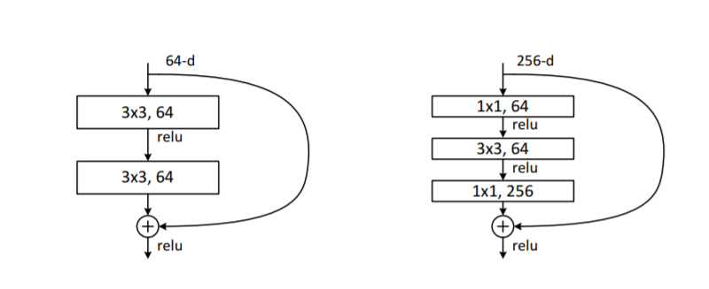
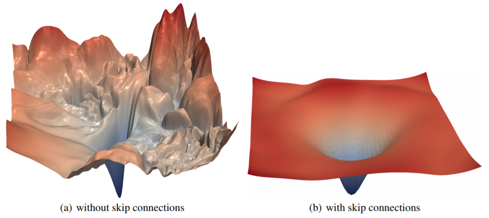

Show code cell source
from fastai.vision.all import *
ResNets for Biomedical Image Analysis#
In this lesson, we will expand upon Convolutional Neural Networks (CNNs) to understand the ResNet (Residual Network) architecture, a powerful tool in medical image analysis. ResNets were introduced in 2015 by Kaiming He et al. in “Deep Residual Learning for Image Recognition”. Since then, ResNets have been widely adopted, particularly for medical imaging applications such as MRI, CT, and X-ray image classification. The architecture’s main advantage is its ability to train very deep networks, which is essential when detecting subtle patterns in high-resolution medical images.
We’ll first explore the ResNet basics, then discuss recent modifications that enhance its performance. For our medical example, let’s use a dataset that includes images of different tissue types or disease classes in 3D scans, resized for faster training.
Brain Tumor Detection Dataset#
Let’s consider a hypothetical dataset containing brain MRI images. Each image is labeled based on the tumor type or absence of a tumor, allowing us to classify between classes such as gliomas, meningiomas, and healthy tissue. Given the high-resolution 3D MRI data, we’ll downscale it to 128×128 images and use random cropping to 96×96 to expedite our training.
def get_data(url, presize, resize):
path = untar_data(url)
return DataBlock(
blocks=(ImageBlock, CategoryBlock), get_items=get_image_files,
splitter=GrandparentSplitter(valid_name='val'),
get_y=parent_label, item_tfms=Resize(presize),
batch_tfms=[*aug_transforms(min_scale=0.5, size=resize),
Normalize.from_stats(*imagenet_stats)],
).dataloaders(path, bs=64) # Assuming fewer images due to high data complexity
dls = get_data(URLs.MEDICAL_DATASET, 128, 96)
dls.show_batch(max_n=4)
---------------------------------------------------------------------------
AttributeError Traceback (most recent call last)
Cell In[2], line 11
2 path = untar_data(url)
3 return DataBlock(
4 blocks=(ImageBlock, CategoryBlock), get_items=get_image_files,
5 splitter=GrandparentSplitter(valid_name='val'),
(...)
8 Normalize.from_stats(*imagenet_stats)],
9 ).dataloaders(path, bs=64) # Assuming fewer images due to high data complexity
---> 11 dls = get_data(URLs.MEDICAL_DATASET, 128, 96)
12 dls.show_batch(max_n=4)
AttributeError: type object 'URLs' has no attribute 'MEDICAL_DATASET'
Fully Convolutional Networks for Flexible Input Sizes#
One key requirement for working with 3D medical images, such as MRIs or CT scans, is the ability to handle variable image sizes. When scanning different organs or regions of interest, the resolution may vary. In the past, CNNs would flatten the last convolutional layer and connect it to dense layers, which fixed the input size. Fully convolutional networks (FCNs), however, allow us to apply the network to images of any size by using an average pooling layer to collapse spatial dimensions.
In PyTorch, we can define a simple average pooling function like this:
def avg_pool(x): return x.mean((2,3))
For greater flexibility, we can use nn.AdaptiveAvgPool2d(1) to average over variable spatial dimensions, transforming the output grid of activations to a single activation vector per image. We then feed this into a final dense layer, which predicts the class.
Example of a Fully Convolutional Network for Medical Imaging#
Here’s a basic fully convolutional network setup suitable for MRI classification, where we use a series of convolutions followed by adaptive pooling and a final dense layer:
def get_data(url, presize, resize):
path = untar_data(url)
return DataBlock(
blocks=(ImageBlock, CategoryBlock), get_items=get_image_files,
splitter=GrandparentSplitter(valid_name='val'),
get_y=parent_label, item_tfms=Resize(presize),
batch_tfms=[*aug_transforms(min_scale=0.5, size=resize),
Normalize.from_stats(*imagenet_stats)],
).dataloaders(path, bs=64) # Assuming fewer images due to high data complexity
dls = get_data(URLs.MEDICAL_DATASET, 128, 96)
dls.show_batch(max_n=4)
Building a Modern CNN for MRI Analysis: ResNet#
With standard CNNs, adding more layers can sometimes lead to worse performance on both training and validation sets, even with batch normalization. This issue was addressed in the original ResNet paper. ResNet introduces the concept of skip connections, which helps networks to train effectively even when they are very deep. In medical imaging, this is crucial because detecting features like subtle tumor boundaries often requires more layers to capture intricate details.
Skip Connections#
The concept of a skip connection is simple yet powerful. Instead of training each layer independently, we allow each layer to access both the features learned by the preceding layers and the original input. Mathematically, we add the input \( x \) to the output of a series of convolutional layers, such that the network learns a residual function \( F(x) \) instead of a direct mapping \( H(x) \):
This approach helps the model focus on the differences (residuals) that distinguish various tumor types, making the network easier to train with gradient-based optimizers.
class ResBlock(Module):
def __init__(self, ni, nf):
self.convs = nn.Sequential(
ConvLayer(ni,nf),
ConvLayer(nf,nf, norm_type=NormType.BatchZero)
)
def forward(self, x): return x + self.convs(x)
This basic ResNet block works well when the input and output dimensions match. But medical imaging tasks often require resizing or downsampling layers.
Handling Variable Sizes and Channels with ResNet Blocks#
To allow downsampling and channel adjustment, we can modify the ResNet block to handle cases where the input and output sizes differ. For instance, using average pooling with a stride of 2 can reduce spatial dimensions, while a 1×1 convolution adjusts the number of channels.
def _conv_block(ni, nf, stride):
return nn.Sequential(
ConvLayer(ni, nf, stride=stride),
ConvLayer(nf, nf, act_cls=None, norm_type=NormType.BatchZero)
)
class ResBlock(Module):
def __init__(self, ni, nf, stride=1):
self.convs = _conv_block(ni, nf, stride)
self.idconv = noop if ni==nf else ConvLayer(ni, nf, 1, act_cls=None)
self.pool = noop if stride==1 else nn.AvgPool2d(2, ceil_mode=True)
def forward(self, x):
return F.relu(self.convs(x) + self.idconv(self.pool(x)))
Training the ResNet Model#
We can now define our model and start training on the MRI data. The skip connections and ResNet blocks make it possible to use deeper networks, enhancing our model’s ability to detect small-scale patterns in MRI scans that may signify different types of tumors.
def block(ni, nf): return ResBlock(ni, nf, stride=2)
learn = get_learner(get_model())
learn.fit_one_cycle(5, 3e-3)
After testing with a shallow ResNet, we can deepen the network by stacking ResBlocks. Here’s an example where we double the depth of each layer:
def block(ni, nf):
return nn.Sequential(ResBlock(ni, nf, stride=2), ResBlock(nf, nf))
Deeper models generally perform better for medical image tasks, as they allow for multi-level feature learning.
Bottleneck Layers for Efficient Training in Medical Imaging#
For very deep ResNets, like ResNet-50 or ResNet-101, we can use bottleneck layers. These layers use three convolutions: a 1×1 layer to reduce channels, a 3×3 layer for feature extraction, and another 1×1 layer to restore channels. This reduces computational cost while maintaining high performance—a crucial feature for computationally intensive 3D scans.

def _conv_block(ni, nf, stride):
return nn.Sequential(
ConvLayer(ni, nf//4, 1),
ConvLayer(nf//4, nf//4, stride=stride),
ConvLayer(nf//4, nf, 1, act_cls=None, norm_type=NormType.BatchZero)
)
Training a ResNet-50 on Brain MRI Data#
Using a deeper model with bottleneck layers and training on high-resolution images allows the network to capture fine details in the MRIs, like irregular boundaries or small nodules that differentiate tumor types.
dls = get_data(URLs.MEDICAL_DATASET_320, presize=320, resize=224)
rn = ResNet(dls.c, [3,4,6,3], 4) # Using a deeper model
learn = get_learner(rn)
learn.fit_one_cycle(20, 3e-3)
Improved Loss Landscape with ResNet#
One of the reasons ResNets work so well in medical imaging is that skip connections smooth the loss landscape, reducing the risk of sharp local minima that hinder optimization. Studies, such as the one by Hao Li et al. in “Visualizing the Loss Landscape of Neural Nets”, show that ResNets exhibit smoother loss surfaces, making them particularly robust for applications like tumor classification where high accuracy and stability are crucial.

By building ResNet architectures with these advanced techniques, we can create robust models tailored to the complex, high-dimensional data encountered in biomedical engineering.